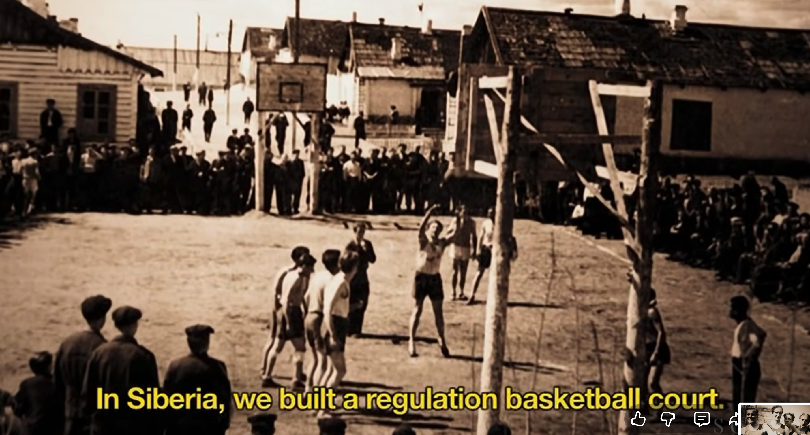

Corrigan also emphasizes the relationship between film form and ideological frameworks: the cultural, political, social, and historical assumptions that inform how films represent the world. Films are never entirely neutral reflections of reality. Their formal choices help construct particular understandings of such issues as class, gender, race, nationality, power, and identity.

For example, mise-en-scène can establish social hierarchies through costume and setting; cinematography can create relationships of authority or vulnerability through framing and camera angles; editing can generate sympathy for one character while marginalizing another; sound can reinforce or undermine the emotional and ideological implications of a scene; and narrative structure can reproduce or question dominant cultural values. Ideological analysis thus involves examining how a film's formal organization makes certain ideas and social relationships appear natural, desirable, or inevitable. At the same time, films can expose contradictions within dominant ideologies and offer alternative ways of understanding social and political realities. The central task of film analysis is to understand how the five elements of film form produce, reinforce, or challenge ideological meaning.